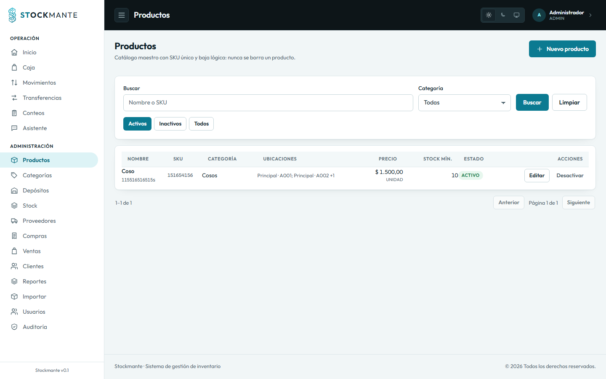

Backend
Rust · Axum · SQLx
API HTTP, transacciones atómicas, RBAC y auditoría.
Sistema de gestión y control de inventario
Inventario claro, operaciones atómicas y decisiones con datos: catálogo, stock, compras, ventas, reportes y un asistente que consulta el sistema en lenguaje natural.

Stockmante es un sistema web para gestionar el ciclo completo del inventario: catálogo y categorías, depósitos y ubicaciones jerárquicas, entradas y salidas de stock, transferencias, conteo físico, compras con proveedores, ventas de caja, reportes, auditoría y alertas de stock mínimo. El backend en Rust garantiza transacciones atómicas y stock no negativo; la SPA en SvelteKit ofrece una operación clara para caja y administración.
Se construyó con Spec-Driven Development: 21 specs, 20 planes y tareas, tests automáticos y gates de calidad. Integra un asistente con LangChain.js que consulta datos con tools y propone movimientos que el usuario confirma por la API. En el flujo de desarrollo se usaron MCP de PostgreSQL (solo lectura) y Playwright.
Alcance funcional
Se propusieron diez casos de uso funcionales antes del desarrollo. El sistema resuelve 9 completos y 1 parcial, por encima del mínimo de 7/10: el CU-09 cubre lector físico y búsqueda exacta por código/SKU; la lectura por cámara y la generación de etiquetas quedan especificadas en la spec 020 para una próxima iteración.
| ID | Caso de uso | Descripción breve | Estado |
|---|---|---|---|
| CU-01 | Registrar/Editar Productos en Catálogo, Ubicaciones y Depósitos | CRUD de productos con SKU único, costo, precio y stock mínimo; depósitos, ubicaciones jerárquicas y asignación a productos. | Completo |
| CU-02 | Registrar Entrada de Stock (Compra / Reabastecimiento) | Compra con proveedor y factura/remito; al confirmar genera una entrada atómica, actualiza stock, costo y auditoría. | Completo |
| CU-03 | Configurar Alertas de Stock Mínimo | Umbral de reabastecimiento por producto y avisos automáticos cuando el stock cae por debajo del mínimo. | Completo |
| CU-04 | Ajustar Stock Manualmente (Auditoría / Mermas) | Corrección de diferencias por rotura, robo o error de conteo, con justificación obligatoria y registro de auditoría. | Completo |
| CU-05 | Consultar Valorización de Inventario y Reportes | Kardex, stock valorizado, rotación y ventas; capital invertido, margen proyectado y productos de baja rotación. | Completo |
| CU-06 | Gestionar Usuarios y Asignar Roles | Alta, edición, baja lógica y reactivación de cuentas; roles ADMIN, GERENTE, OPERARIO y CAJERO. | Completo |
| CU-07 | Registrar Movimientos de Stock | Ingreso y egreso atómico por depósito, con validación de stock, autoría y resultado visible. | Completo |
| CU-08 | Consultar Disponibilidad y Ubicación de Producto | Búsqueda por SKU, código, nombre o categoría y consulta del stock disponible por depósito en tiempo real. | Completo |
| CU-09 | Generar / Escanear Código de Barras o SKU | Identificación por código de barras/SKU con lector físico y búsqueda exacta; cámara y etiquetas especificadas en la spec 020. | Parcial |
| CU-10 | Notificación Automática de Inventario Crítico | Evaluación periódica de productos bajo mínimo y digest por correo/dashboard con deduplicación diaria. | Completo |
Transferencias entre depósitos · inventario físico y conteo · ventas y clientes · compras y proveedores · reportes y kardex · auditoría consultable · importación CSV · asistente LangChain · rediseño claro/oscuro.